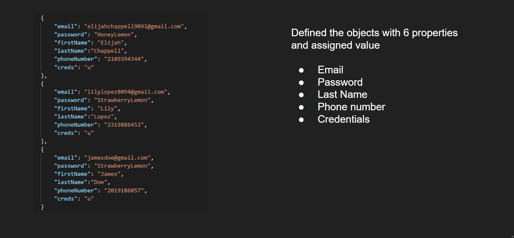

William Burroughs
Loc Nguyen
Jonathan Villarreal
Maria Vanesa Rivera
Emilio Ibarra
Develop a software product that manages hotel reservations across a group of hotels of varying characteristics.
Develop software with the following features:
Front-end
navBar
searchBar

Back-end
Database